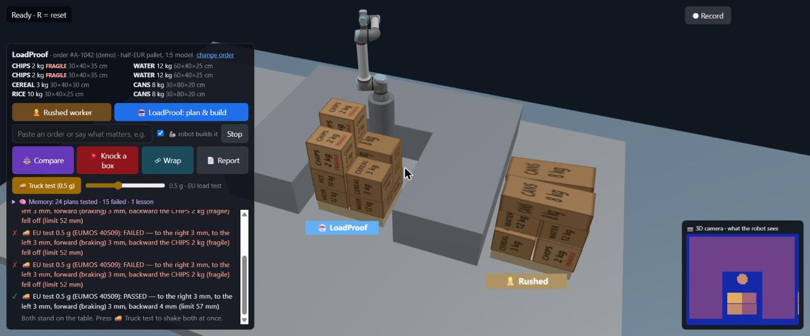
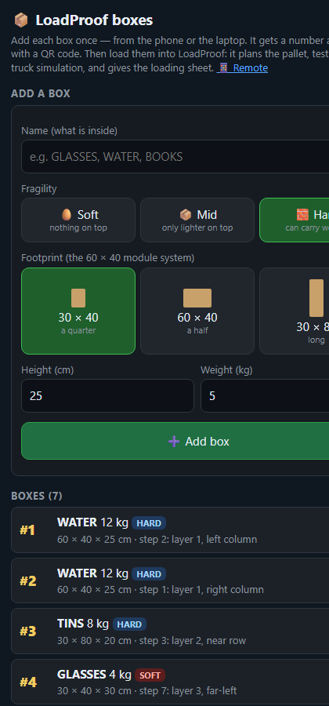
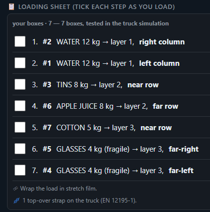
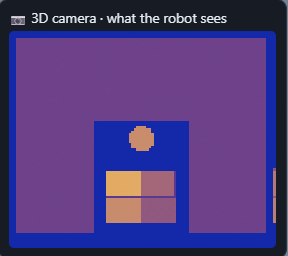

Same 8 boxes. Left: LoadProof. Right: a rushed loader stacks them as they arrive — 12 kg of water ends up on a bag of chips. In our truck simulation the rushed pallet falls apart at 0.5 g, the EU load-test level.
Who: warehouse loaders who stack mixed orders — shops, wholesalers, distribution centres.
It plans the stack, tests it in a physics truck simulation, decides wrap and straps, then guides a worker step by step on their phone — or drives a robot arm. Usable today with a phone, ready for robots tomorrow.
On the phone: what is inside, soft / mid / hard, size, weight. Each box gets a number and a QR label.
Every plan is shaken like a trip: EU test 0.5 g and hard braking 0.8 g. A plan that fails is never built.
A step-by-step loading sheet on the phone (box #7 → layer 1, left column), then wrap and straps — or the UR10e robot builds it.
Fails? Another arrangement, stretch wrap, or "put this box on a second pallet".
Tools: Google Gemini API · MuJoCo 4 (WebAssembly) · three.js · Vite · UR10e model from MuJoCo Menagerie · Claude Code (AI coding assistant — wrote most of the code from our instructions). Works without the AI too: fixed steps call the same tools.

Add a box on the phone

The loading sheet: step by step, then wrap and 1 strap
The UR10e robot cell builds the plan; ⚖️ Compare against a rushed loader, then 🚚 truck test

What the robot's 3D camera sees
| Our tests (physics simulation) | LoadProof | Rushed loader |
|---|---|---|
| Demo order, EU test 0.5 g | passes · 1 mm | falls · 7 rule breaks |
| Hard braking 0.8 g, wrapped | passes · 1 mm | fails · 12 kg on fragile chips |
| 6 demo boxes + 2 random ones, 7 cases | 6 pass, 1 "move this box to a second pallet" | falls or fails in all 7 |
Honest limits: a planning check in simulation, not a certification; one half pallet, up to 9 boxes; it trusts the box data; the UR10e carries 12.5 kg.
Next
Code: github.com/justkuchkorov/loadproof
Team Baxtiyor: Abdurakhmon, Alyor · Track: Autonomous Agents & Intelligent Systems